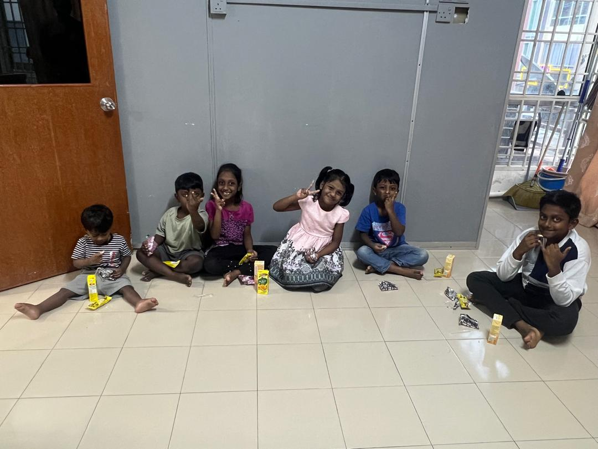
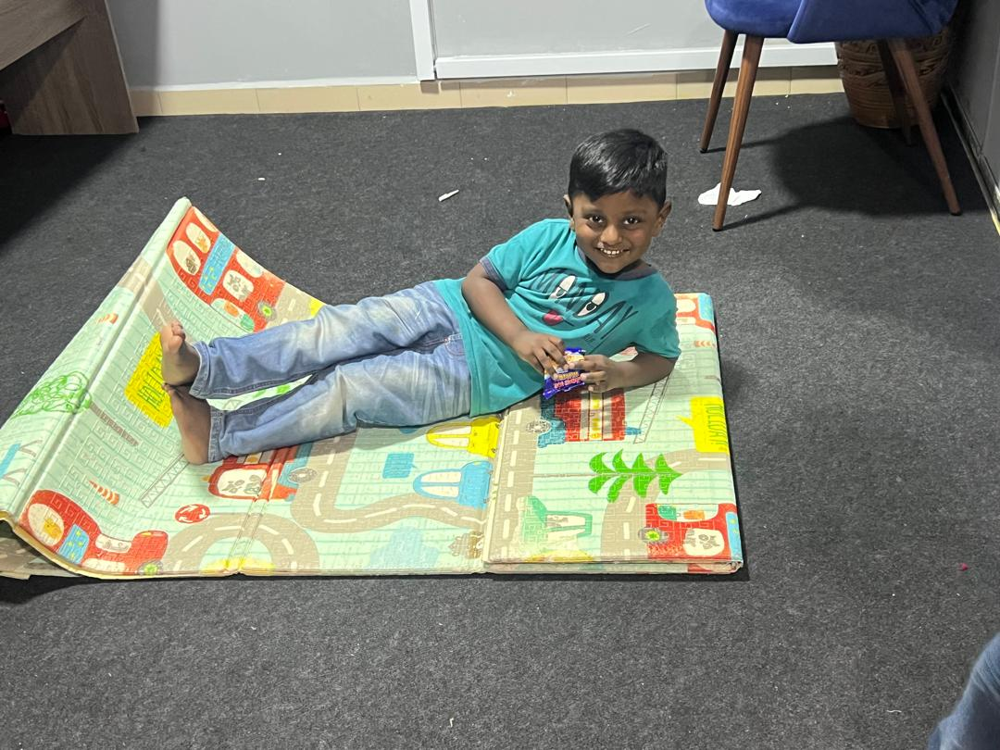
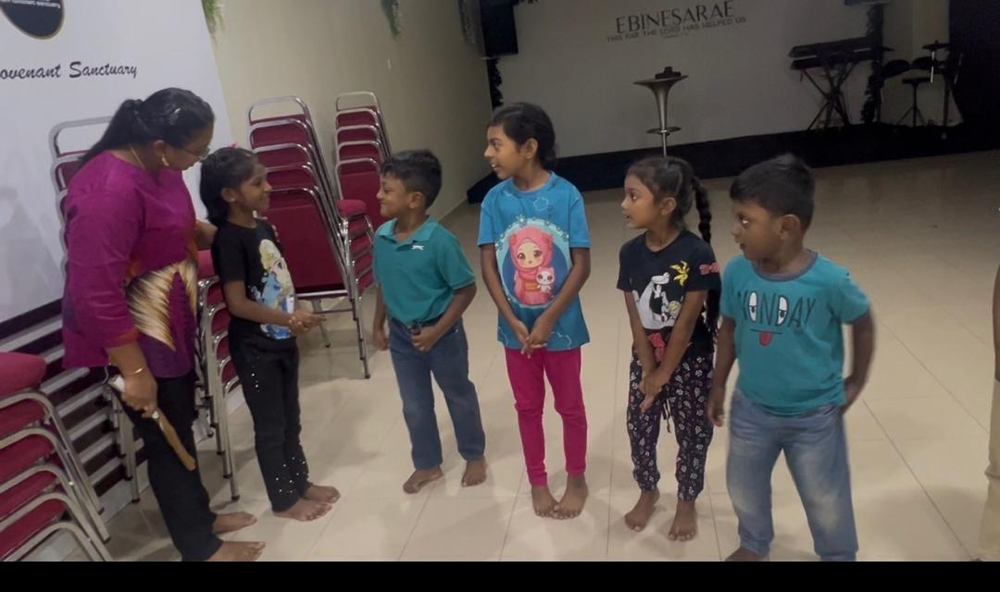
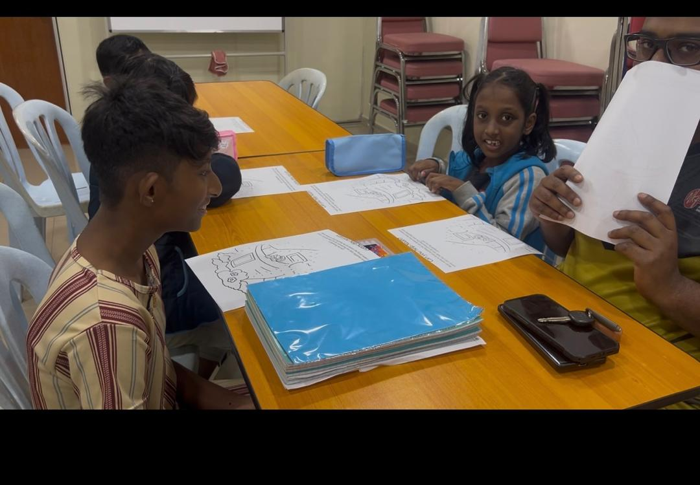

Love
Welcoming people with kindness, dignity, and compassion.
Faith · Community · Compassion
A place to belong. A place to grow. A place to serve.
Growing in faith, walking in compassion, and serving our community together. Everyone is welcome, and every person deserves to be treated with love, dignity, and respect.
Explore Our Ministries Get in TouchWho We Are
New Covenant Sanctuary (NCS) is committed to faith, fellowship, encouragement, and practical care for the wider community.
We seek to create a welcoming place where individuals and families can grow spiritually, build meaningful relationships, and find opportunities to serve others.
Our heart is to share compassion beyond boundaries—welcoming people from every race, background, and circumstance, and offering support with kindness and respect.
Through Bible learning, prayer, children’s activities, fellowship, and community outreach, we hope to encourage people to grow together and make a positive difference.
“Let all that you do be done in love.”1 CORINTHIANS 16:14
Welcoming people with kindness, dignity, and compassion.
Growing through Scripture, prayer, learning, and encouragement.
Putting care into action and supporting our wider community.
Our Leadership
Pastor Joshua serves the NCS family through preaching, prayer, worship and pastoral care. His heart is to encourage people to grow in faith, find strength in prayer and walk together as a caring community.
Through Sunday gatherings and house fellowships, he creates opportunities for people to encounter God, support one another and build meaningful relationships.
View Ministry MomentsLife at NCS
A glimpse of the people, prayer and shared moments that make up our NCS family.
Gathering together in praise, prayer and the Word.


Growing together through prayer, encouragement and care.


Remembering the people and moments that helped shape our community.


More moments of worship, fellowship and community life at NCS.


Helping young hearts learn, play, create and grow together.




More ministry photographs and stories will be added as our community grows.
Our Journey
Remembering the spaces and people who shaped our NCS journey.
Memories from the beginning of our journey.
Photographs awaiting confirmation of the building period.
Growing in Faith
Nurturing young hearts through learning, fellowship and faith.
Connect · Learn · Grow
There is a place for you at NCS. Get in touch with the relevant ministry contact for more details.
Learn and reflect on the Bible together in an online class.
Every Tuesday · 8:30 PM – 10:00 PM
Contact Selena: 017-404 2770
A welcoming time for children to learn, connect, and grow in faith.
Every Saturday · 5:00 PM – 7:00 PM
Contact Pastor Adryana: +60 16-748 1219
Come together for prayer, hope, and encouragement.
Every Thursday · 8:00 PM – 10:00 PM
For details, contact NCS: WhatsApp us
Gather for fellowship, connection, and encouragement as a community.
Every Sunday · 10:30 AM – 12:00 PM
For details, contact NCS: WhatsApp us
A new space for young people to connect, discover their gifts, build confidence, and grow together.
Stay tuned for updates!
We aim to encourage practical care, community support, and opportunities to help people in need.
Care · Help · Serve · Together
Interested in getting involved? Contact NCS
Everyone Is Welcome
NCS seeks to build a caring community through fellowship, learning, prayer, and practical service. We welcome people from all backgrounds and believe that small acts of kindness can make a meaningful difference.
Faith · Community · Compassion
Connect With UsWe'd Love to Hear From You
Have a question about a class, ministry, or community activity? Reach out to us.